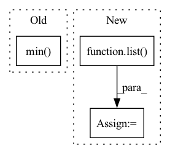

Pattern ID :10425
Before Change
s = jt.array(x.shape).data.tolist()
m, n = x.shape[-2:]
k = np.min( (m, n))
k = int(k)
s1 = copy.deepcopy(s)
s1[-1] = k
After Change
k = min(m, n)
s1 = list(x.shape)
s1[-1] = k
s2 = list( x.shape)
s2[-2] = k
s3 = list(x.shape)[:-2]
s3.append(k)
In pattern: SUPERPATTERN
Frequency: 3
Non-data size: 3
Instances Fragment ID: 36425640
Project Name: jittor/jittor
Commit Name: eda31dcacf6f1de52daecb1f6c6f5fc7c93dbb41
Time: 2020-08-11
Author: randonlang@gmail.com
File Name: python/jittor/linalg.py
M Class Name: AnonimousClass
N Class Name: AnonimousClass
M Method Name: svd(1)
N Method Name: svd(1)
M Parent Class:
N Parent Class:
M File Name: python/jittor/linalg.py
N File Name: python/jittor/linalg.py
M Start Line: 10
M End Line: 67
N Start Line: 67
N End Line: 73
Before Change
weights: torch.FloatTensor = grad.mean(dim=-1, keepdim=True).mean(dim=-1, keepdim=True) // (N,C,1,1)
heatmap: torch.FloatTensor = (feats * weights).sum(dim=1).clamp(0) // (N,H,W)
heatmap = heatmap.view(-1, _input.shape[-2], _input.shape[-1]) // (N,H,W)
heatmap.sub_(heatmap.flatten(start_dim=1).min() )
heatmap.div_(heatmap.flatten(start_dim=1).max())
return heatmapAfter Change
_output = self._model.pool(feats)
_output = self._model.flatten(_output)
_output = self._model.classifier(_output)
grad: torch.FloatTensor = list( torch.autograd.grad(_output[:, _class], feats)) [0] // (N,C,H,W)
feats.requires_grad_(False)
weights: torch.FloatTensor = grad.mean(axis=-1, keepdim=True).mean(axis=-1, keepdim=True) // (N,C,1,1)
heatmap: torch.FloatTensor = (feats * weights).sum(dim=1).clamp(0) // (N,H,W)
heatmap = np.array(heatmap.cpu())
heatmap = cv2.resize(heatmap[0], _input.shape[2:])
heatmap = heatmap - np.min(heatmap) Fragment ID: 36425679
Project Name: ain-soph/trojanzoo
Commit Name: 0f8d0e05888b69956b12e4367b28cc62ba6a6981
Time: 2020-11-20
Author: corazju@zju.edu.cn
File Name: trojanzoo/model/imagemodel.py
M Class Name: ImageModel
N Class Name: ImageModel
M Method Name: grad_cam(3)
N Method Name: grad_cam(3)
M Parent Class: Model
N Parent Class: Model
M File Name: trojanzoo/model/imagemodel.py
N File Name: trojanzoo/model/imagemodel.py
M Start Line: 187
M End Line: 200
N Start Line: 206
N End Line: 222
Before Change
else:
x_range = (
min(dist.min() , dist.min()),
max(dist.max(), dist.max())
)
After Change
xs = sorted(np.unique(dist))
if len(xs) > 50:
// If there are too many values, we take only 50, using a constant interval between them:
xs = list( range(int(xs[0]), int(xs[-1]) + 1, int((xs[-1] - xs[0]) // 50)))
else:
// Heuristically take points on x-axis to show on the plot
// The intuition is the graph will look "smooth" wherever we will zoom it
// Also takes mean and median values in order to plot it later accurately Fragment ID: 36425669
Project Name: deepchecks/deepchecks
Commit Name: 0bd8be4792b38c96daa3fdb0c303db46fe3d49ef
Time: 2023-04-02
Author: 92314933+nirhutnik@users.noreply.github.com
File Name: deepchecks/nlp/utils/nlp_plot.py
M Class Name: AnonimousClass
N Class Name: AnonimousClass
M Method Name: get_text_outliers_graph(6)
N Method Name: get_text_outliers_graph(6)
M Parent Class:
N Parent Class:
M File Name: deepchecks/nlp/utils/nlp_plot.py
N File Name: deepchecks/nlp/utils/nlp_plot.py
M Start Line: 113
M End Line: 123
N Start Line: 123
N End Line: 141